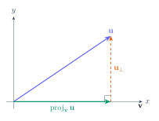

Bir noktayı belirtmek için konum, bir vektörü belirtmek için büyüklük ve yön gerekir. Sağ elli Kartezyen sistemde \(P=(x,y,z)\) noktasının koordinatları sırasıyla \(yz\), \(xz\), \(xy\) düzlemlerine göre işaretli konumunu anlatır. \(xy\) düzlemi \(z=0\), \(xz\) düzlemi \(y=0\), \(yz\) düzlemi \(x=0\) ile tanımlanır. Üç koordinatın işaretleri uzayı sekiz bölgeye ayırır.
\(A\) noktasından \(B\) noktasına giden vektör her koordinatta son eksi ilk alınarak bulunur. Başlangıç noktası değişse bile aynı büyüklük ve yönü koruyan oklar aynı serbest vektörü temsil eder. Buna karşılık \(\overrightarrow{OA}\), başlangıcı orijin olduğu için konum vektörüdür.
\(\mathbf u=(u_1,u_2,u_3)\) ve \(\mathbf v=(v_1,v_2,v_3)\) için toplama bileşen bileşen yapılır. \(\lambda\mathbf u\) uzunluğu \(|\lambda|\) katına çıkarır; \(\lambda<0\) ise yönü ters çevirir. Standart baz \(\mathbf i=(1,0,0),\mathbf j=(0,1,0),\mathbf k=(0,0,1)\) olduğundan \(\mathbf u=u_1\mathbf i+u_2\mathbf j+u_3\mathbf k\) yazılır.
Önce norm alınır: \(\|\mathbf u\|=\sqrt{9+16}=5\).
Her bileşeni 5 ile bölünce \(\widehat{\mathbf u}=(3/5,4/5)\) elde edilir. Norm kontrolü \(9/25+16/25=1\) verir. Ters yöndeki birim vektör bunun negatifidir.
1.3
Skaler çarpım, açı ve diklik
Skaler çarpım iki vektörün aynı doğrultuda ne kadar bileşeni bulunduğunu ölçer; sonucu sayıdır. Bileşen formülü hesaplamada, geometrik formül açı yorumunda kullanılır. Sıfır olmayan vektörler için çarpım pozitifse dar, negatifse geniş, sıfırsa dik açı vardır.
\(\mathbf u=(2,-1,3)\) ve \(\mathbf v=(1,4,2)\) dik midir? \(\cos\theta\) nedir?
Adım adım çözümü göster
\(\mathbf u\cdot\mathbf v=2-4+6=4\). Çarpım sıfır olmadığından dik değildirler.
\(\|\mathbf u\|=\sqrt{14}\), \(\|\mathbf v\|=\sqrt{21}\). Dolayısıyla \(\cos\theta=4/\sqrt{294}\). Pozitif sonuç açının dar olduğunu doğrular.
Yön kosinüsleri, vektörün pozitif koordinat eksenleriyle yaptığı açıların kosinüsleridir. \(\cos\alpha=u_1/\|\mathbf u\|\), \(\cos\beta=u_2/\|\mathbf u\|\), \(\cos\gamma=u_3/\|\mathbf u\|\) ve \(\cos^2\alpha+\cos^2\beta+\cos^2\gamma=1\). Bu bağıntı birim vektör kontrolünün başka bir biçimidir.
1.4
İzdüşüm: bir vektörü iki parçaya ayırmak
Bir kuvveti eğim boyunca ve eğime dik bileşenlerine ayırırken izdüşüm kullanılır. \(\mathbf u\) vektörünün \(\mathbf v\) doğrultusundaki işaretli skaler bileşeni bir sayıdır; vektörel izdüşümü ise bu sayı ile \(\widehat{\mathbf v}\) çarpılarak elde edilir.
\(\mathbf u_{\perp}=\mathbf u-\operatorname{proj}_{\mathbf v}\mathbf u\) kalanı \(\mathbf v\) ile diktir. Kontrol için kalanla \(\mathbf v\) skaler çarpılır. İşaretli bileşen negatif olabilir; izdüşümün uzunluğu istendiğinde mutlak değer alınır.
\(\mathbf u\cdot\mathbf v=4\), \(\|\mathbf v\|^2=2\). Bu yüzden izdüşüm \(2(1,0,1)=(2,0,2)\).
Dik kalan \((0,1,0)\) olur ve \((0,1,0)\cdot(1,0,1)=0\). Skaler bileşen \(4/\sqrt2=2\sqrt2\).

İzdüşüm, vektörü bir doğrultuya paralel ve o doğrultuya dik iki bileşene ayırır.
1.5
Vektörel çarpım ve alan
Vektörel çarpım \(\mathbb R^3\) içinde her iki girdiye de dik bir vektör üretir. Yönü sağ el kuralıyla belirlenir. Sıra değişirse işaret değişir; bu yüzden determinant açılımındaki orta bileşenin eksi işaretine dikkat edilir.
\(\mathbf u=(1,2,3)\), \(\mathbf v=(2,0,1)\) için \(\mathbf u\times\mathbf v\) bulunuz.
Adım adım çözümü göster
Bileşenler \((2\cdot1-3\cdot0,\,3\cdot2-1\cdot1,\,1\cdot0-2\cdot2)\) şeklindedir. Sonuç \((2,5,-4)\).
Diklik kontrolleri: \((2,5,-4)\cdot(1,2,3)=2+10-12=0\) ve \((2,5,-4)\cdot(2,0,1)=4-4=0\). Alan \(\sqrt{45}=3\sqrt5\), üçgen alanı \(3\sqrt5/2\).
1.6
Karma çarpım, hacim ve aynı düzlemde olma
Üç vektörün skaler karma çarpımı bir taban alanı ile işaretli yüksekliğin çarpımıdır. Sonucun mutlak değeri paralelyüzlünün hacmidir. Üç vektör aynı düzlemsel alt uzaydaysa yükseklik sıfırdır; determinant da sıfır olur.
\(\mathbf u=(1,0,0),\mathbf v=(0,2,0),\mathbf w=(1,1,3)\) için hacim ve bağımsızlık nedir?
Adım adım çözümü göster
\(\mathbf v\times\mathbf w=(6,0,-2)\); \(\mathbf u\cdot(\mathbf v\times\mathbf w)=6\). Paralelyüzlü hacmi 6, dörtyüzlü hacmi 1 birim küptür.
Determinant sıfır olmadığından bu üç vektör lineer bağımsızdır ve \(\mathbb R^3\) için baz oluşturur.
Lineer bağımsızlık, \(\alpha\mathbf u+\beta\mathbf v+\gamma\mathbf w=\mathbf0\) eşitliğinin yalnızca sıfır katsayılarla sağlanmasıdır. İki vektörde bağımsızlık paralel olmamaya, üç vektörde sıfır olmayan determinanta indirgenir. \(\mathbb R^2\) içinde ikiden fazla vektör bağımsız olamaz.
\(\mathbf u=(2,-3)\), \(\mathbf v=(-5,4)\) düzlem için baz mıdır?
Adım adım çözümü göster
Determinant \(2\cdot4-(-3)(-5)=8-15=-7\ne0\). Dolayısıyla bağımsızdırlar ve bazdırlar.
Her \((x,y)\), \(\alpha\mathbf u+\beta\mathbf v\) olarak tek biçimde yazılır. Denklem sistemi çözülürse \(\alpha=-(4x+5y)/7\), \(\beta=-(3x+2y)/7\). Yerine koyma her iki koordinatı doğrular.
1.8
Yöntem seçimi ve kendi kendini kontrol
İstenen
Kullanılacak işlem
Kontrol
Açı / diklik
\(\mathbf u\cdot\mathbf v\)
Sonuç bir sayıdır.
Dik vektör / alan
\(\mathbf u\times\mathbf v\)
Her iki vektörle skaler çarpım sıfır.
Hacim / üçlü bağımsızlık
Karma çarpım
Hacim negatif olamaz.
Yön / birim vektör
Norma bölme
Norm 1 olmalı.
1.8Pekiştirme
Pekiştirme
\(\mathbf a=(1,1,0),\mathbf b=(1,-1,2)\) için diklik, birim vektör ve paralelkenar alanını bulunuz.
Adım adım çözümü göster
\(\mathbf a\cdot\mathbf b=0\), dolayısıyla diktirler. \(\widehat{\mathbf a}=(1,1,0)/\sqrt2\).
\(\mathbf a\times\mathbf b=(2,-2,-2)\); alan \(2\sqrt3\). Ayrıca dik vektörlerde alan \(\|\mathbf a\|\|\mathbf b\|=\sqrt2\sqrt6=2\sqrt3\), aynı sonucu verir.